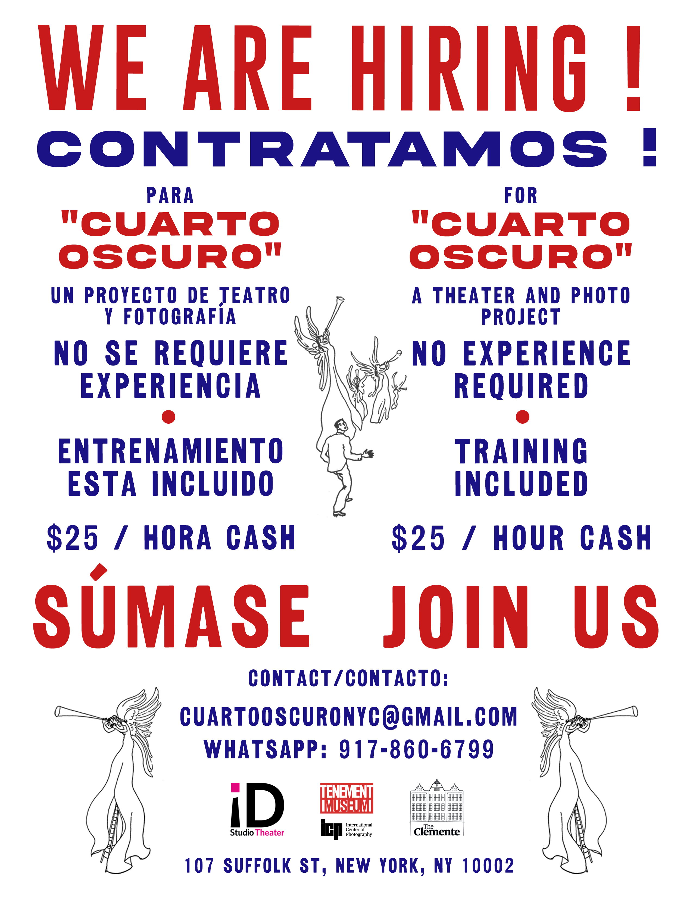

CUARTO OSCURO
This video is the first iteration of the silent second act of Oklahama!, a three act play inspired by Kafka's unfinished novel, The Missing Person (Amerika), in which he proposes a theater company that will employ anyone who applies. Oklahama! is planned for production in 2025.
Cuarto Oscuro documents a series of theatrical experiments that took place in four sessions in September, 2024. For the project, we hired a cast of six people without restrictive criteria at the entrance to NYC’s Randall's Island migrant encampment. This video shows their first encounter with theatrical work as well as tests of a new system designed to live-stream our efforts. It includes experiments in braiding images and language gathered from what our cast showed us and told us and what we wanted to quote, enact or say, interleaved with words transcribed from the process.
Our work involved re-stagings of Jacob Riis’ seminal photos of 19th century life in New York and used strong flashes in a dark room. We also staged scenes based on silent films and on the experiences, ideas, and video contributions of our cast. All participants were paid the same hourly wage, and one cast member called us a familia de desconocidos, a family of strangers. Our collective experience left us all wanting to do much more.
Cuarto Oscuro was made through a commission from the Clemente Center to project directors Lucia della Paolera and Seth Tillett. We made this edit for projection during the Clemente Center’s Historias festival in New York City on 9/28/24.
we are
Adrien de Mones, Lucia della Paolera, Nicole Fernandez, Ingrid Garza, Michael Guidetti, Larson Harley, Justine Lugli, Sandie Luna, Johana Maldonado, Adrián Pérez, Shirley Carabali Piedrahita, Nicole Rauscher, David Rosales, Jhonny Alberto Sinisterra Ruiz, Seth Tillett.
we thank
The Clemente, ID Studio Theater, International Center of Photography, Joel Fitzpatrick Studio, Tenement Museum
*
